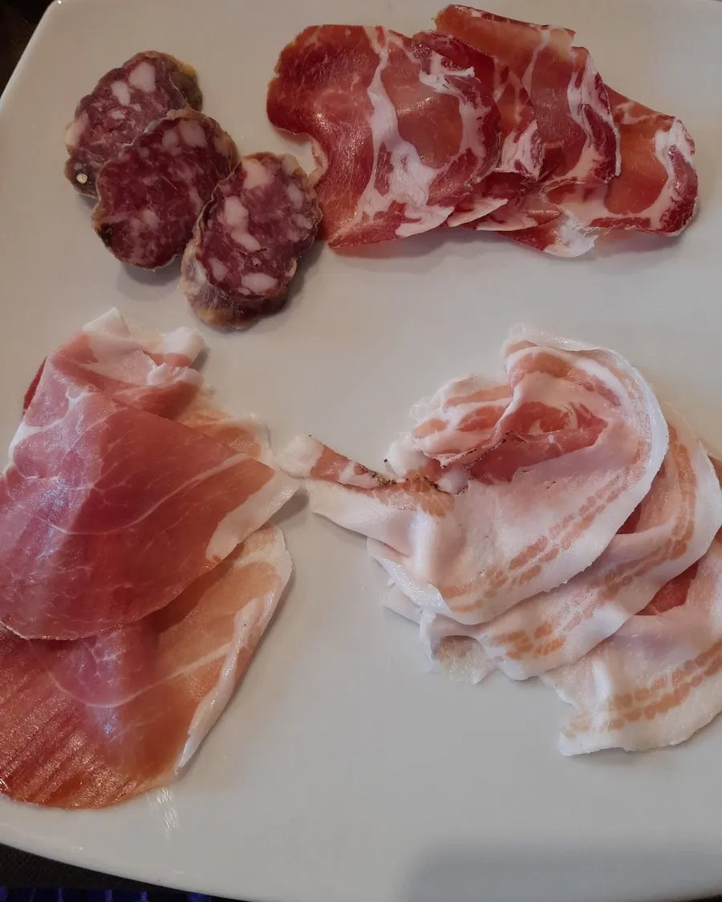
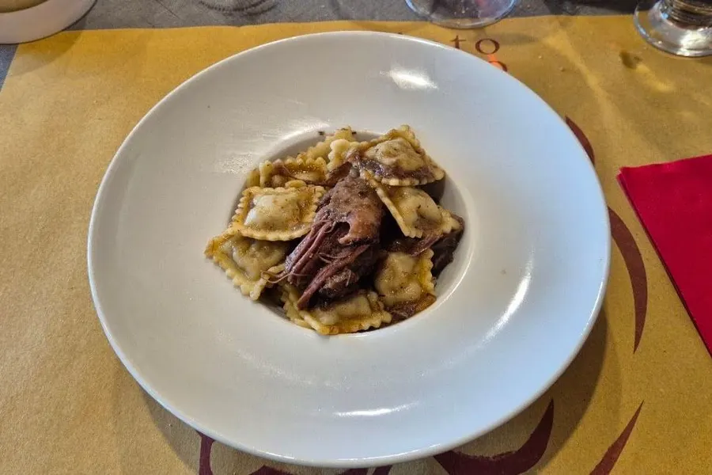
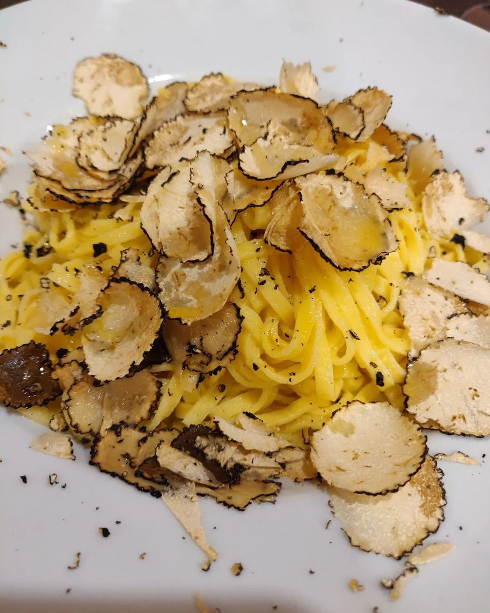
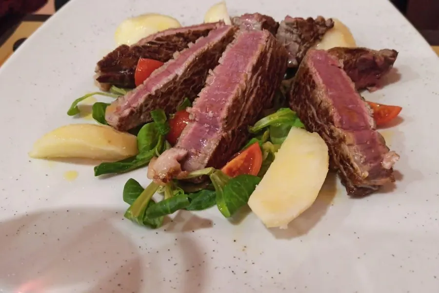
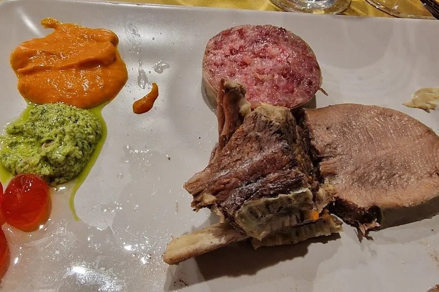

La carne, presa sul serio.
Circolo enogastronomico a Voghera. Salumi, ravioli di brasato, tagliate ed entrecôte maturate fino a 60 giorni, da bestie nate e allevate in Italia.
Prenota: 0383 175 0601 Leggi il menu
4,7 su Google · 298 recensioni (ottobre 2026)
Si comincia dal tagliere.
Culatello, coppa, salame e pancetta. Poi la pasta ripiena, e la griglia: ecco cosa arriva più spesso sulla tovaglietta con il toro.




